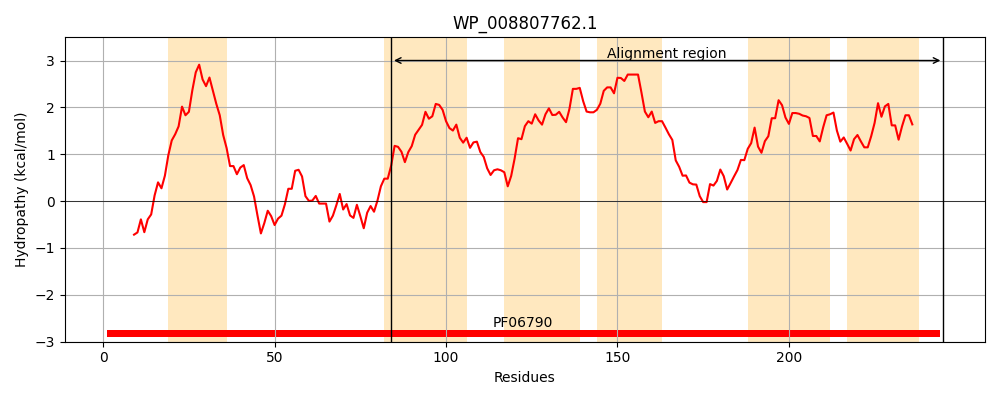
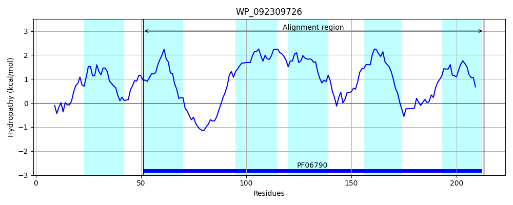
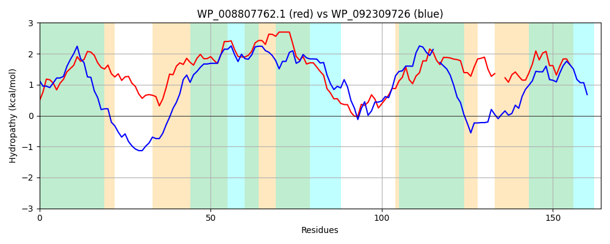

Hit Accession: WP_092309726
Hit TCID: 9.B.28.2.4
Hit Description: gnl|BL_ORD_ID|21597 gnl|TC-DB|WP_092309726.1|9.B.28.2.4 hypothetical protein [Pseudomonas saponiphila]
Mach Len: 164
e:0.000000
Query TMS Count : 6
Hit TMS Count: 6
TMS-Overlap Score: 4.000000
Predicted Substrates:None
BLAST Alignment:
Score: 141 , Bit scores: 58 bits, E-value: 1.4e-10, Alignment length: 164, Percentage identity: 26
Query: 84 ASTFSGLVGNAILAGGVLLLIQLVSAGHRVSALRAIGASAPVLPKLLLLILFTTFLVQMGMMLVLVPGVLLAIVLAFAPIMLVQDKMGILSAMRSSMRLAWANLRLVAPAIIGWLVAKTLLLLFASSFAVLTPN--VGAVVINTISNLISALLLIYLFRVYMLI 245
+S GL+ + G ++L + + G + + P+ LL +T L+ +G+ L +PG+ L +VLAFA +LV + L+A++ S+RL+ + + I+ +V LL AS A P+ + +V+++ + + + LFR++MLI
Sbjct: 51 SSVVVGLLLYPLYTGALILFLDARTRGQSPRNRDLWAMALSLWPRFALLTAVSTLLILLGLSLYFLPGLWLMVVLAFAEYLLVLKGLAPLAAIKESLRLSRGHFLRILLCILAVMV-PLWLLKGASEAAYPEPHNPILTLVLDSAYSFLQLFTSVVLFRLFMLI 213 | Protein Hydropathy Plots: |
|---|
|  |  |
Pairwise Alignment-Hydropathy Plot:
|
|---|
|  |